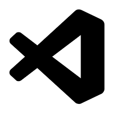

CMD
Bij CMD leer je het volledige ontwerpproces kennen: van techniek en vormgeving tot interactieontwerp (hoe mensen jouw ontwerp gebruiken). Het is belangrijk dat producten aansluiten bij de gebruikers, en dat ontdek je tijdens de opleiding. Ook leer je kritisch na te denken over de impact van jouw ontwerpen op mensen en hoe ze de maatschappij kunnen beïnvloeden. (Hogeschool van Amsterdam, z.d.).
Leerjaar 1 en 2
In jaar 1 volgt iedereen hetzelfde onderwijsprogramma. Je werkt aan projecten (ontwerpopdrachten) voor echte opdrachtgevers en je leert vaardigheden tijdens ondersteunende vakken die je meteen kunt gebruiken in praktijkopdrachten.
Jaar 2 begint weer met gezamenlijke vakken en projecten. Vanaf de tweede helft van het jaar kun je zelf vakken en projecten kiezen om je eigen onderwijsprogramma samen te stellen. Ook loop je een korte stage (10 weken) bij een bedrijf. (Hogeschool van Amsterdam, z.d.).
Competenties
Bij CMD moeten de studenten voldoen aan de volgende competenties:
- oriënteren en begrijpen,
- verbeelden en conceptualiseren,
- prototypen en uitwerken,
- evalueren,
- samen ontwerpen,
- georganiseerd en professioneel ontwerpen,
- persoonlijk en geëngageerd ontwerpen &
- vakkundig en onderzoekend ontwerpen.
Computerprogrammas’s die ik gebruik
 Figma
Figma Adobe Illustrator
Adobe Illustrator Adobe Photoshop
Adobe Photoshop Adobe XD
Adobe XD- Miro
 GitHub
GitHub- Visual Studio Code